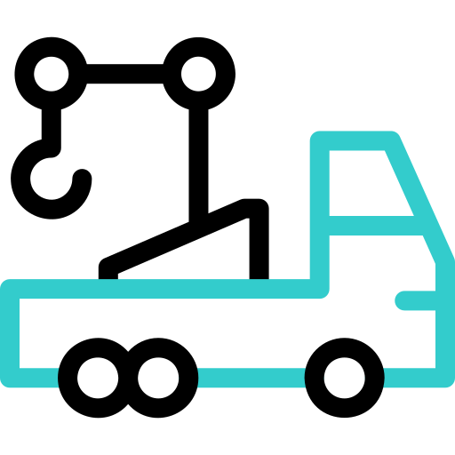

OFERUJEMY

SKUP POJAZDÓW
Współczesne, zabytkowe, PRL, uszkodzone, sprawne, bez przeglądu, bez ubezpieczenia, w sprawiedliwej wycenie, z dojazdem do klienta oraz gotówką od ręki.

TRANSPORT POJAZDÓW
Transport lawetą do 3,5t.

ZŁOMOWANIE POJAZDÓW
W tym złomowanie aut popowodziowych.